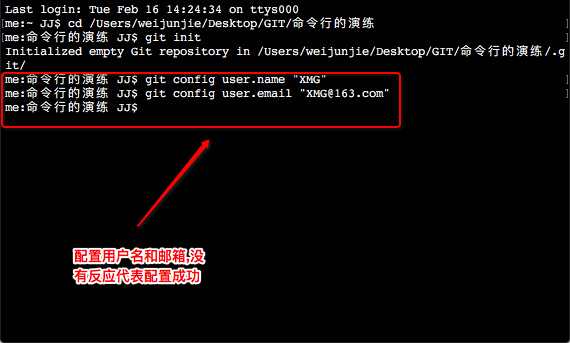
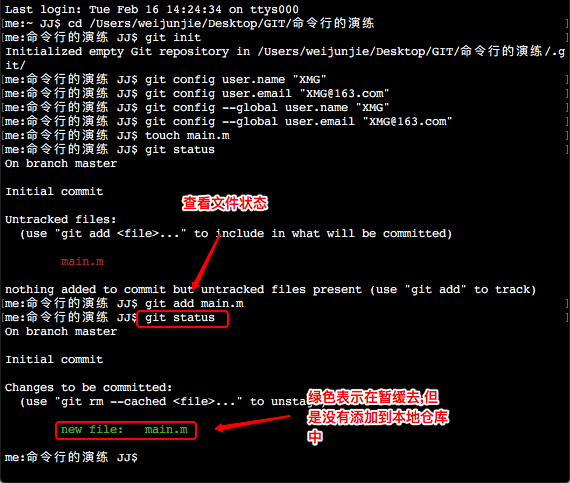
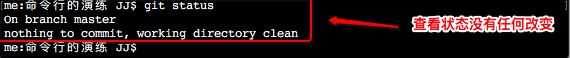
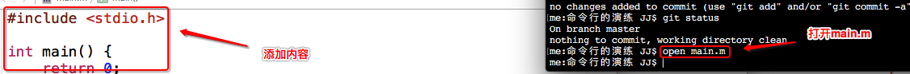

二.初始化git仓库1.进入到命令行的演练文件夹,初始化一个空的代码仓库
git init
2.给git配置一个用户名和邮箱
git config user.name "XMG":配置用户名
git config user.email "XMG@163.com":配置邮箱
3.查看配置的用户名和邮箱
.git->config(使用文本编辑打开)
4.给git配置全局的用户名和邮箱(只要创建了git就必须配置用户名和邮箱,配置全局的后,当该文件没有用户名和邮箱则会使用全局的)
git config --global user.name"XMG":配置全局用户名
git config --global user.email"XMG":配置全局邮箱

5.查看配置的全局的用户名和邮箱
前往->个人->.gitconfif(使用文本编辑打开)
 三.初始化项目
三.初始化项目1.在工作目录(.git的同级目录),创建main.m
touch main.m

2.查看文件状态
git status
红色:新创建的文件或者修改的文件没有被添加到暂缓区
3.将main.m添加到暂缓区
git add main.m

4.查看加入到暂缓区后的文件状态
git status
绿色:文件在暂缓区,但是没有添加到本地仓库中
5.将mian.m提交到本地代码仓库中
git commit -m "初始化项目" main.m

6.查看提交到本地代码仓库后的状态
git status
7.打开main.m写一些代码
open main.m
8.查看文件状态(依旧为红色,只要是新建的文件或者是修改的文件都是红色,表示没有被添加到暂缓区)
git status

9.将mian添加到缓存区
git add main.m

11.查看添加后的状态(可以进行提交)
git status

12.将修改的main.m提交到本地代码仓库中
git commit -m "修改了main.m中的内容"

13.查看提交后的状态
git status